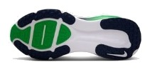
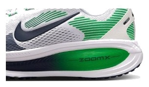

DAILY｜クッション重視
この値段で、この厚さ。
¥16,500で、衝撃吸収は147SA。今回比べた6足でトップタイの数字を、最も安い価格帯で出している。その代わり、重くて、跳ねない。ゆっくり長く走る人のための、割り切った靴である。
ゆっくりしたジョグが中心の人。脚を守りたい人。予算2万円以内で厚いクッションが欲しい人。
ペースを上げる練習も1足で済ませたい人。軽さを重視する人。


衝撃吸収147SAは、¥20,900のクリフトン 10と同じ値である。価格差は¥4,400。クッションだけを買うなら、ボメロ 18の割安さが目立つ。
フォーム硬度は30.5ACと柔らかい。一方、前足部のエネルギーリターンは58.9%にとどまる。沈み込みは大きいが、押し戻す力は強くない。スピードの点が2.5なのはそのためである。
摩耗深度は1.1mm。6足の中ではいちばん削れやすく、推定寿命は約500kmになる。1kmあたりの費用は約33円で、買うときの安さほど走ってからは安くない。
5点満点。計測値を当サイトのルールで点数にしたもの。
クッションと安定性は4.0で、デイリーで比重の大きい2項目を押さえている。性能点はデイリー67足中27位。軽さ2.0とスピード2.5、グリップ2.5が伸びないのは、この靴の設計どおりと言っていい。
高いほど衝撃を吸収する。
摩耗深度から推定した寿命で計算。短いほど安い。
| ボメロ 18 | ペガサス 41 | クリフトン 10 | |
|---|---|---|---|
| 価格 | ¥16,500 | ¥16,500 | ¥20,900 |
| 実測重量 | 298g | 281g | 275g |
| 衝撃吸収（SA） | 147 | 125 | 147 |
| エネルギーリターン前足部 | 58.9% | 61.4% | 57.2% |
| 摩擦係数 | 0.38 | 0.25 | 0.49 |
| 摩耗深度 | 1.1mm | 0.9mm | 1.0mm |
| 性能点 | 3.64 | 3.22 | 3.68 |
| コスパ点 | 3.5 | 3 | 3 |
ペガサス 41とは同じ価格で、クッションに振るか癖のなさを取るかの選択になる。クリフトン 10とはクッションが同値で、23g軽い代わりに¥4,400高いクリフトンをどう見るかである。
かかとの幅は96.5mmと広く、土台は安定している。ただしヒール剛性は3で、かかとを硬く固める靴ではない。摩擦係数は0.38で、ペガサス 41よりは滑りにくいが、高い水準ではない。
サイト値の290gに対し、実測は298gだった。試着では重さの印象を確認したい。柔らかいフォームが合うかどうかも、店内で少し歩くと分かりやすい。
週2〜3回のゆっくりしたジョグなら、これ以上のクッションはほとんどいらない。推定寿命は約500kmなので、週15kmで7〜8か月が目安である。久しぶりに走る日が多い人にも向く。
安く、厚く、柔らかい。速く走る靴ではないが、ゆっくり走る時間を楽にする靴としては価格以上の数字が出ている。
※本記事は海外ラボ（RunRepeat）の計測データとメーカー公表値、当サイトの計算をもとにした分析です。計測はUS9（約27cm）です。1kmあたりの費用は摩耗深度から推定した寿命での概算です。価格は当サイトの掲載値で、変更されている場合があります。